Community
Vibrant neighborhoods, amenities, housing choice, public spaces, and a stronger sense of place.
A long-range framework for transforming an auto-oriented commercial and industrial area into a connected, mixed-use, multimodal collection of urban neighborhoods gradually, incrementally, and in a coordinated way.
The plan positions South Frederick as a future regional economic and community center: more walkable, more varied in housing and activity, better connected by multiple travel modes, and able to make greater use of infrastructure that already exists.
Vibrant neighborhoods, amenities, housing choice, public spaces, and a stronger sense of place.
Walkable streets, safe movement, daily physical activity, social interaction, tree canopy, and healthy habitats.
Place quality as a competitive advantage for businesses, workers, investment, and regional attraction.
Reuse existing infrastructure, conserve rural and natural resources, improve resilience, and reduce dependence on driving.
The design concept distinguishes areas with different development character, then overlays civic streets, open spaces, green infrastructure, landmarks, and connections so individual projects can add up to a coherent whole.
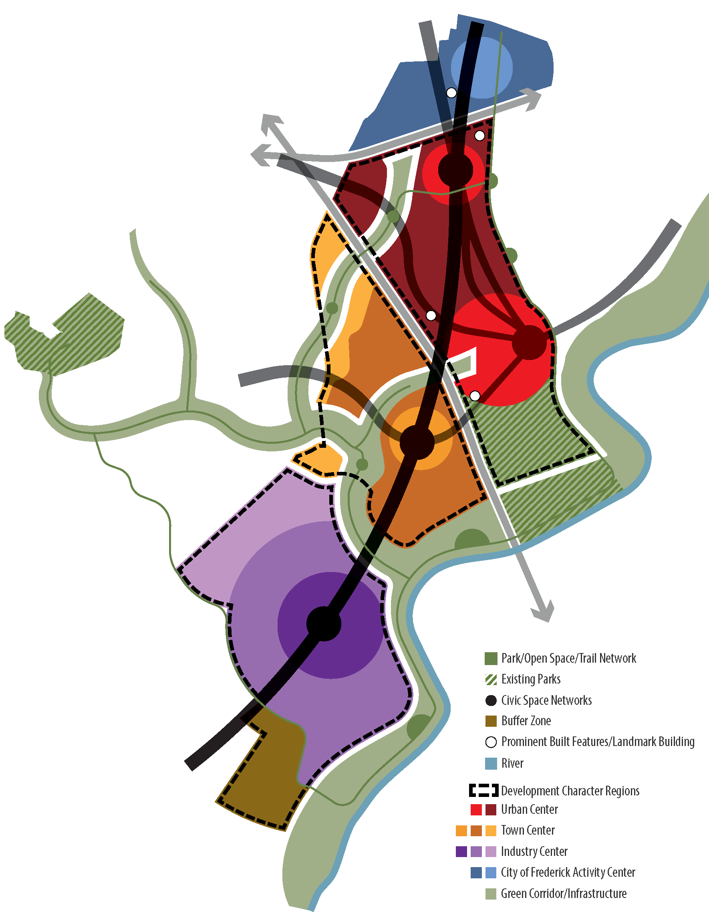
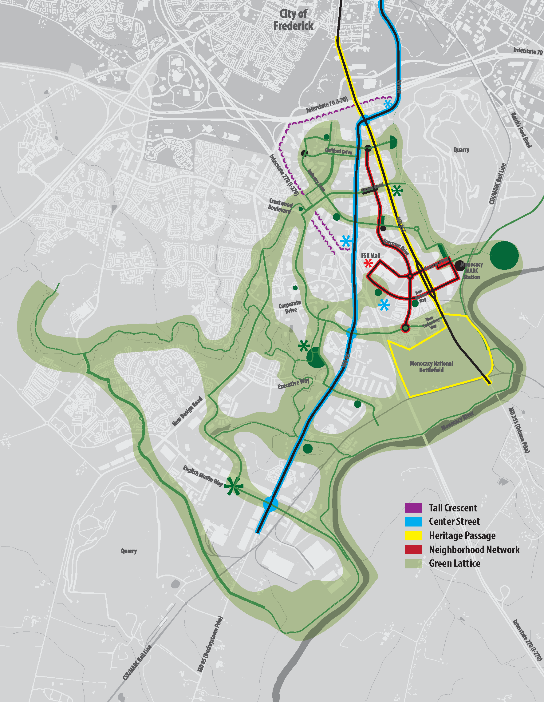
A highly visible crescent of taller buildings along I-270 and I-70 that helps define identity and buffer the interior.
MD 85 as the primary business and activity corridor, with plazas at major crossings.
MD 355 as a historic corridor linking significant landmarks and open spaces.
A localized road network that improves internal connectivity and strengthens access to the MARC station.
Stream valleys, parks, institutions, and multi-purpose paths organized as a second layer of movement and open space.
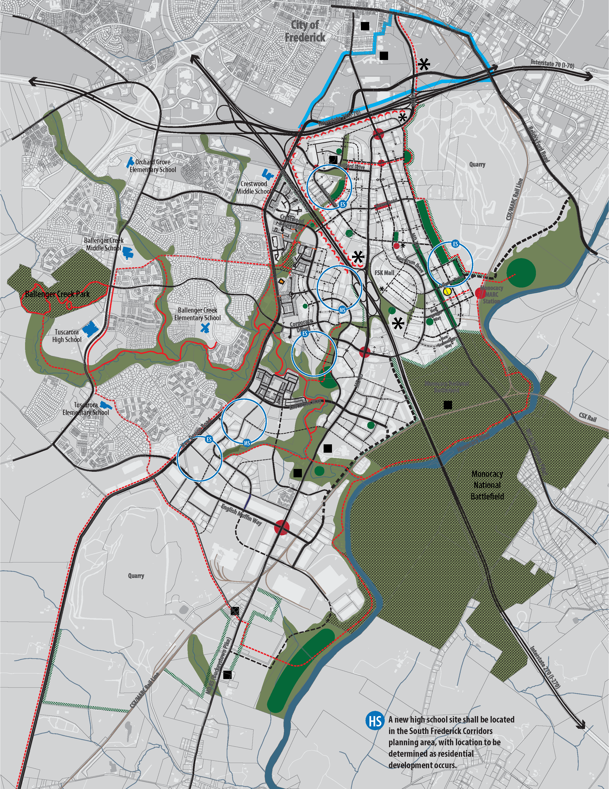
Rather than organizing only by topics like land use or transportation, the plan uses nested geographic scales. That keeps the focus on places as integrated systems.
The entire South Frederick Corridors planning area.
South Frederick Triangle east of I-270 and Ballenger Creek East west of I-270.
Evergreen Point, Crestwood Corridor, and Lime Kiln.
Smaller places where local character, connections, parks, and redevelopment patterns become more specific.
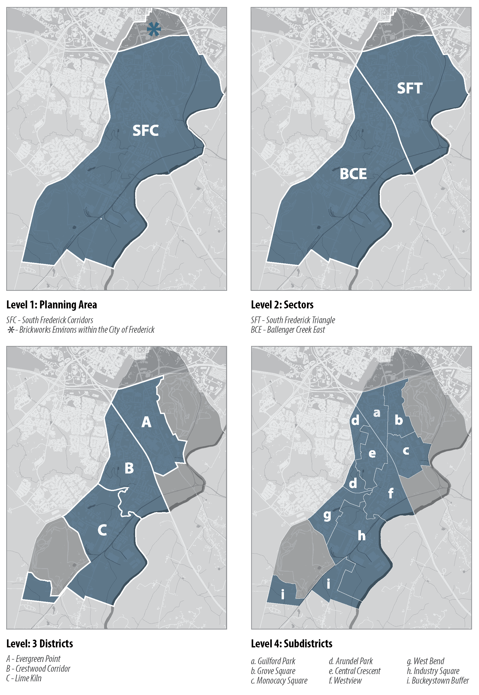
The adopted plan uses a dwelling-allocation concept to differentiate the character and growth capacity of places while allowing more flexibility in how uses and housing types are combined.
Sector split: 6,000 dwellings in South Frederick Triangle and 4,000 in Ballenger Creek East. The allocation is conceptual and the plan anticipates a process for reviewing and modifying distributions over time.
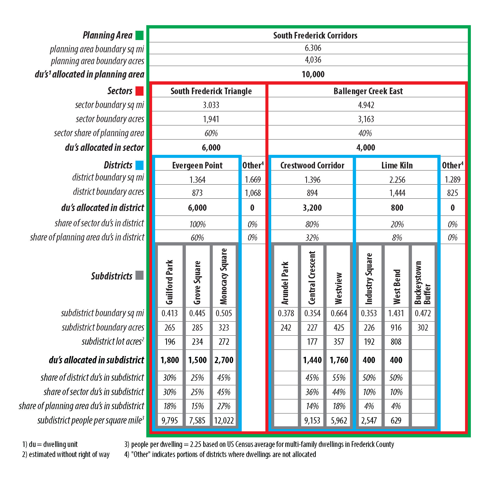
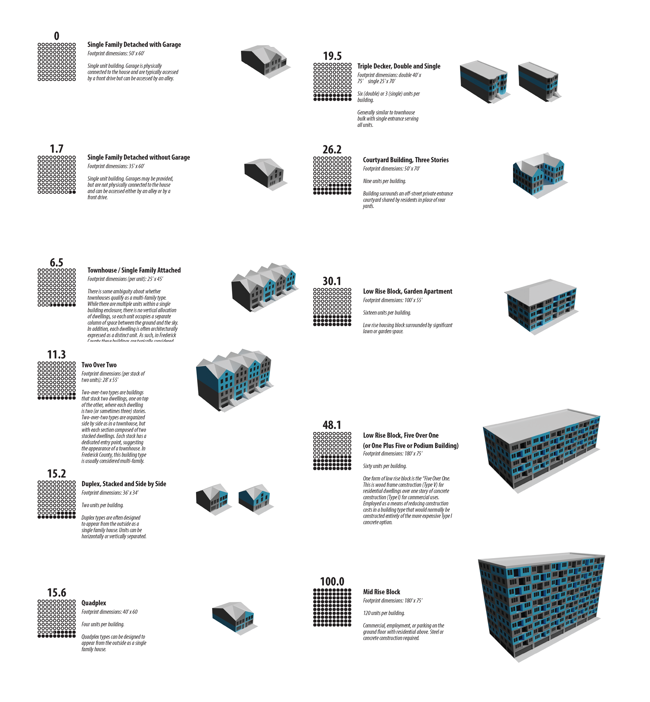
The plan explicitly broadens the housing palette beyond conventional detached houses and garden apartments. It illustrates two-over-twos, duplexes, quadplexes, courtyard buildings, low-rise blocks, podium buildings, and mid-rise blocks, with the goal of matching housing choice to a more walkable urban pattern.
Its core planning argument is that built form, frontage, streets, and public/private relationships do more to determine the quality of a place than a single density ratio.
The plan adds form designations to the Comprehensive Plan Map. These emphasize building placement, street relationship, massing, and character rather than treating land use as the sole organizing idea.
Locations where groups of taller buildings can form visible, place-identifying features.
Higher-density, pedestrian-oriented mixed use with buildings close to wide sidewalks and active street frontage.
Pedestrian-oriented development along major corridors while reinforcing cultural and historic context.
A broad range of residential and compatible commercial building types on medium-sized blocks.
Places where modern industrial activity and community uses can combine to create competitive advantages.
A mixed industrial context with a greater emphasis on residential uses than the Industrial Center designation.
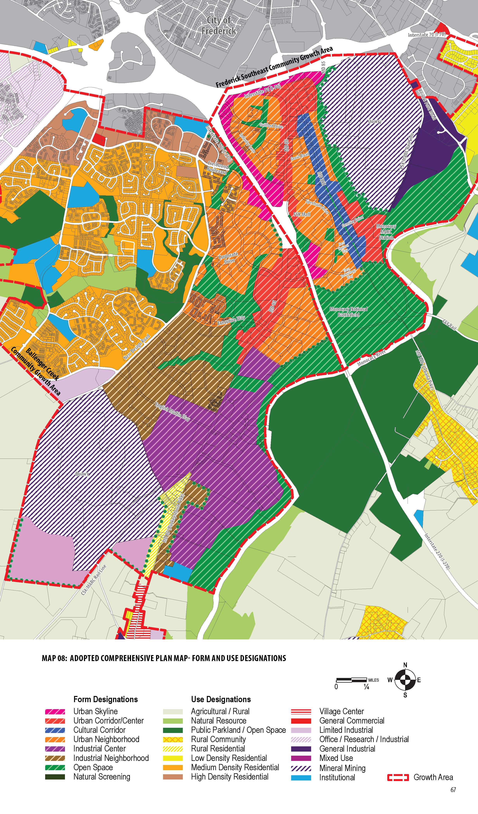
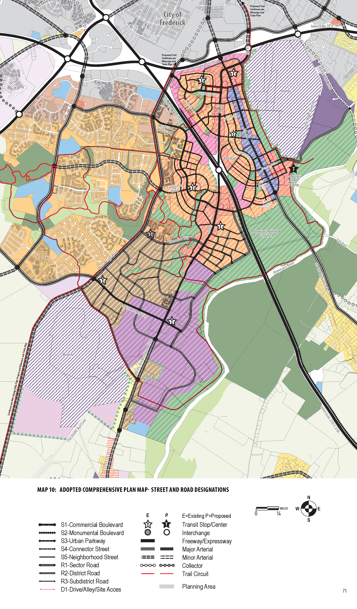
The plan differentiates pedestrian-oriented streets from more mobility-oriented roads, then adds drives and alleys for local access. The result is intended to distribute trips across a connected network while making walking, biking, transit, and public space integral to the design.
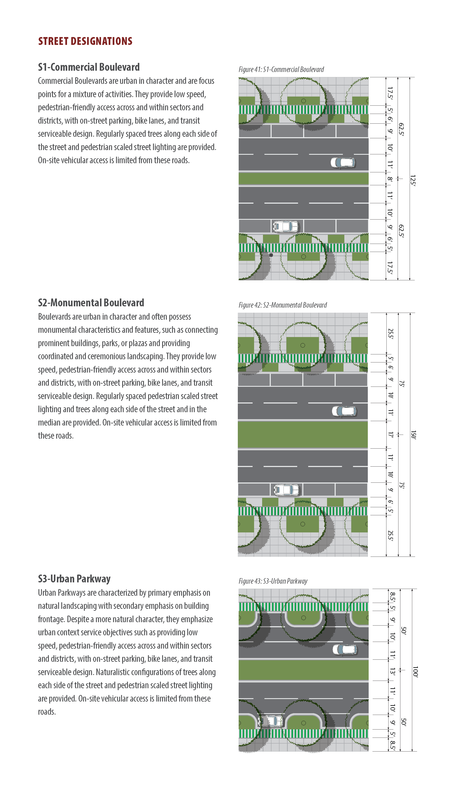
Commercial Boulevard, Monumental Boulevard, Urban Parkway, Connector Street, and Neighborhood Street. These emphasize low-speed, pedestrian-friendly access and urban frontage at different scales.
Sector, District, and Subdistrict Roads. These are more mobility-oriented connections and place greater emphasis on throughput.
Coordinated site access across adjoining parcels, especially where direct access from a street or road is prohibited or discouraged.
The plan calls for building frontage to face designated streets, puts main entries on the frontage, and states that on-site parking should not sit between a building frontage and a designated street. It also stresses a deliberate transition between public streetscape and private interior space.
That is a major shift from conventional suburban layouts, where wide parking fields and landscaped buffers often separate buildings from streets.
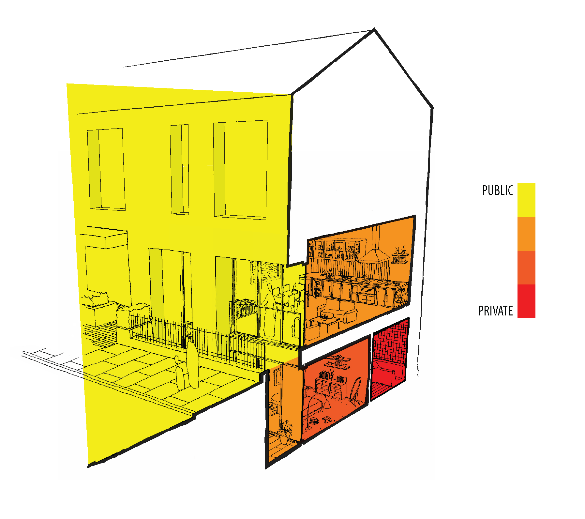
An integrated loop of multi-use trails is centered on Ballenger Creek and extends through the planning area, linking parks, schools, historic sites, and riverfront destinations. The plan treats these facilities as transportation infrastructure as well as recreation.
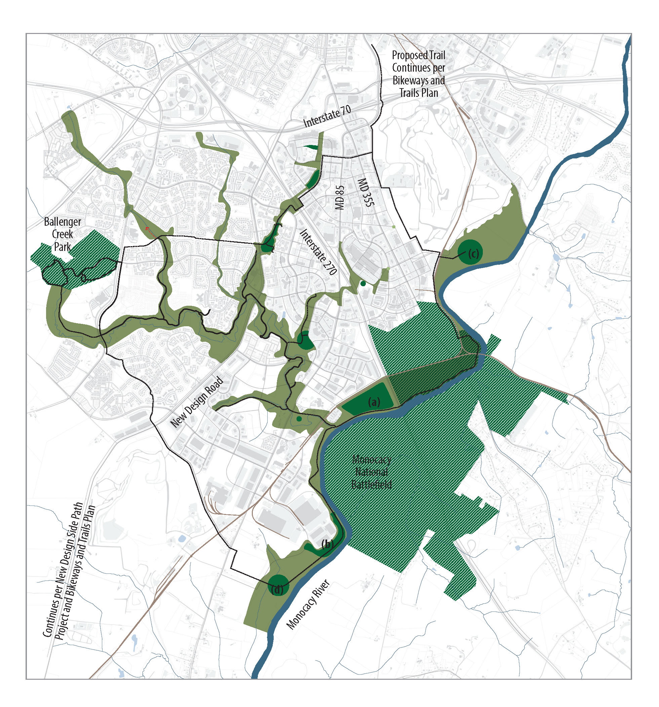
The plan identifies riverfront parks along the Monocacy, a trail circuit, restored natural features, and green infrastructure corridors. It also argues that open-space mitigation should support centralized parks and plazas based on where they best serve the overall network, not merely where an individual redevelopment site happens to be located.
The implementation chapter uses a “Framework of Fours” to test initiatives from different viewpoints and emphasizes shared responsibility among government, private development, nonprofits, and institutions.
Align policy decisions, public spending, services, housing, economic development, and environmental action with the plan.
Use public resources deliberately and leverage private, state, and federal funding to build the shared framework.
Adopt focused rules that give redevelopment the best chance of producing a vibrant, mixed-use, accessible place.
Coordinate public, private, and institutional actions so separate investments reinforce one another.
The action agenda then moves into concrete topics including street and transit improvements, mobility funding, missing-middle housing, parks and trails, economic resilience, public water and sewer, schools, stormwater management, EV charging, and ongoing plan monitoring.